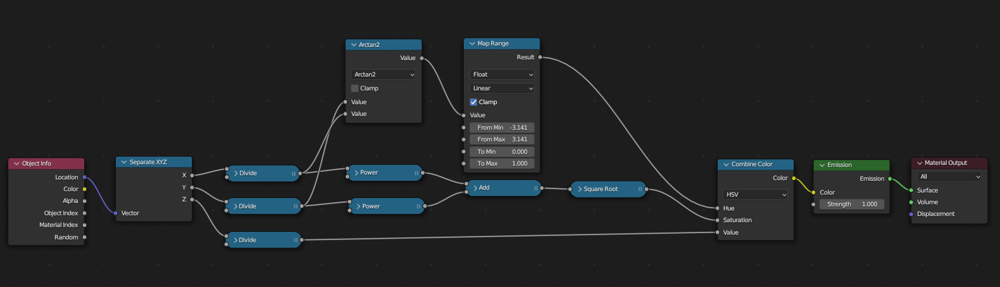
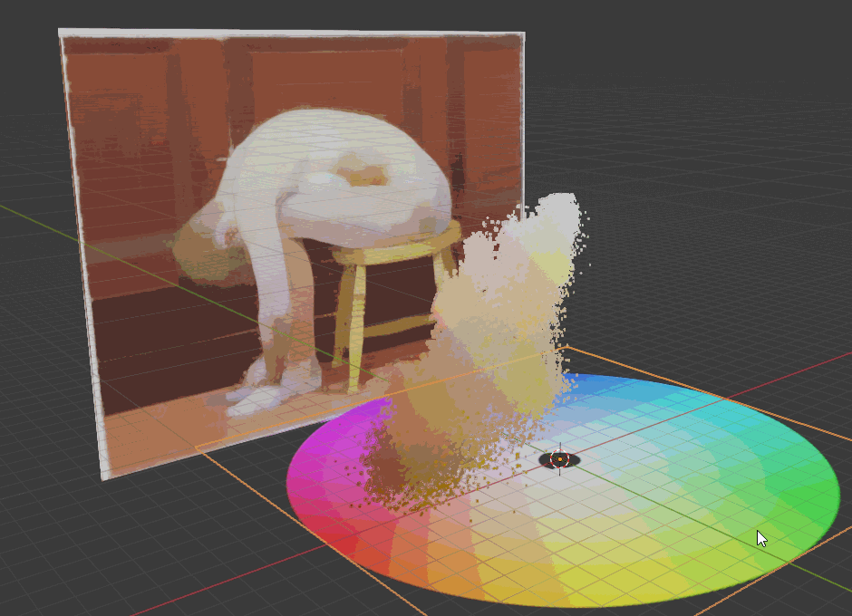

Color Lesson
研究色彩在HSV空间中分布规律的可视化工具
2024/1/8 by DKZ

这是一个用于研究颜色在 HSV 空间分布的可视化工具，可以将一张图片每个像素的颜色提取出来映射在 HSV 色彩空间中。
点这里可以尝试这个软件。里面内置了一些取色器，采样，色板等小功能可以用作板绘时的参考。
用法是
1.选择文件 2.load图片，可点击图片吸色 3.设置色板大小，边框，是否下采样（使用高斯卷积），缩放比，偏移等参数 4.点击采样可查看采样后的图片和生成的色板 5.点击 color lesson 可生成一个 json 文件，包含 HSV 空间位置信息
接下来可以用这个脚本将 json 导入到 blender 中
import bpy
import bmesh
import json
# 假设verts是一个包含点位置的列表
verts =[[1, 0, 0], [0, 1, 0], [0, 0, 1], [0, 0, 0]]
with open('C:/Users/DKZ/Desktop/color_lesson.json','r') as f:
j=json.load(f)
verts=j.get('d',[])
mesh = bpy.data.meshes.new(name="ColorLessonMesh") # 创建一个新的mesh
obj = bpy.data.objects.new("ColorLessonObj", mesh) # 创建一个新的object
scene = bpy.context.scene
scene.collection.objects.link(obj)
bm = bmesh.new()
for v in verts:
bm.verts.new(v) # 添加一个顶点
#bm.faces.new(bm.verts) # 通过所有顶点创建一个面
bm.to_mesh(mesh) # 将bmesh写入到mesh
bm.free() # 清理bmesh
mat = bpy.data.materials["ColorLessonMaterial"]
if len(obj.data.materials):
obj.data.materials[0] = mat
else:
obj.data.materials.append(mat)
node = bpy.data.node_groups["GNColorLesson"]
if obj.modifiers.get('GeometryNodes'):
obj.modifiers['GeometryNodes'].node_group = node
else:
obj.modifiers.new('GeometryNodes', 'NODES')
obj.modifiers['GeometryNodes'].node_group = node
HSVHSV 使用这个几何节点，生成 HSV 空间的分布

由于位置信息在 HSV 就代表了颜色信息，所以只要用 xyz 直角坐标转化为极坐标得到的值就是 HSV 表示的颜色

所以直接只用 shader 把颜色渲染出来就可以看到最终 HSV 圆柱体这张图片的色彩分布情况了

最后效果如下

接下来会找一些艺术家的画研究一下他们所使用的颜色